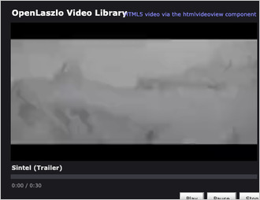

This application opens in a window. If you don't see it, you may need to bring that window to the front.
A small video player with a clip library: pick a clip from the list, then play, pause, and scrub it with the transport controls.
OpenLaszlo's stock videoview was Flash-only (built on Flash's
NetStream/NetConnection). This demo plays through htmlvideoview,
a drop-in replacement that wraps a browser-native HTML5 <video> element,
so the same LZX application now streams video in DHTML with no plugin.